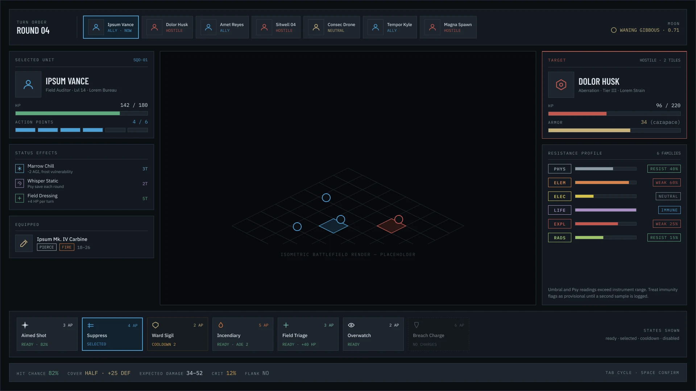
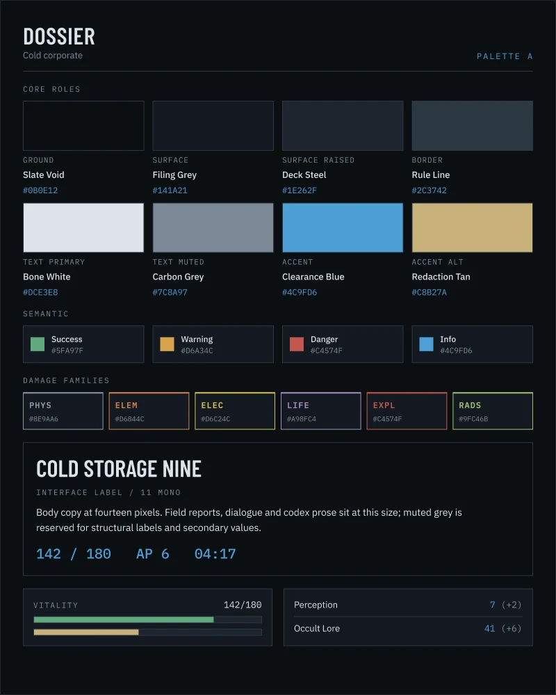
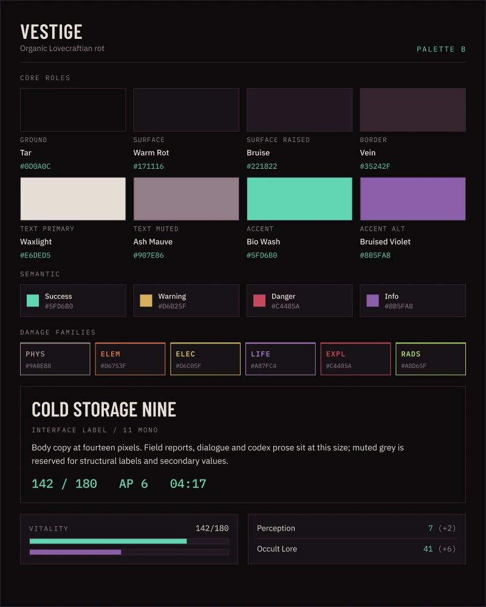
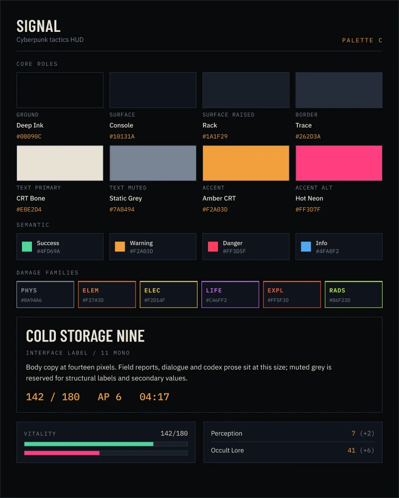
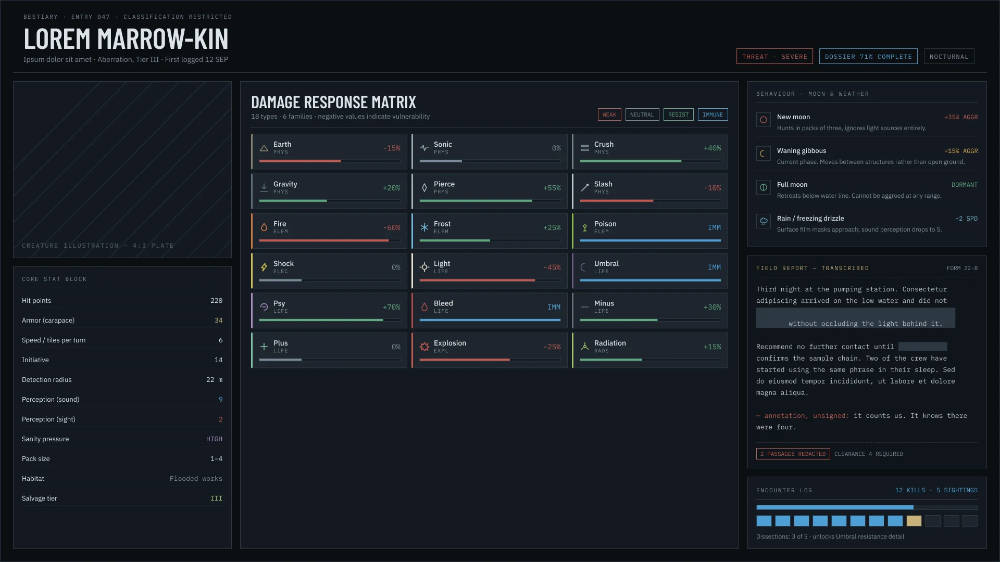
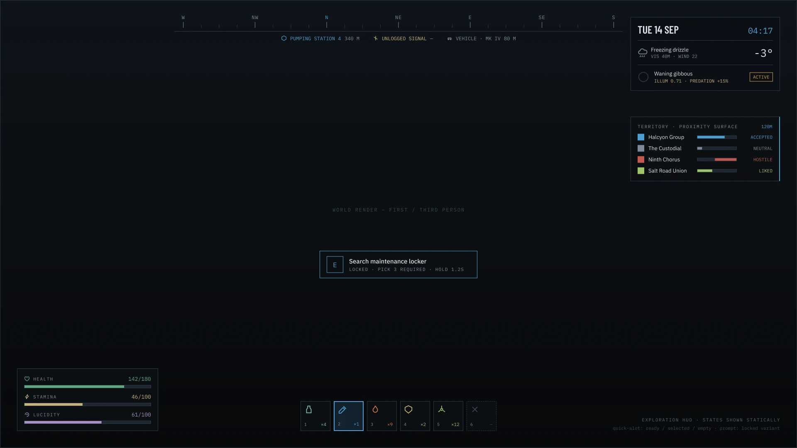
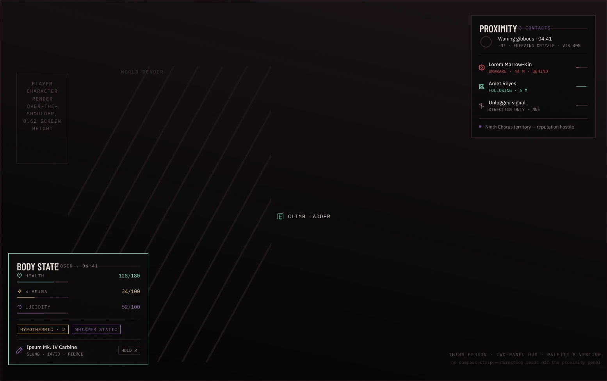

Chapter 07: Dreamland: Concept Pass
A UI/UX concept pass for a game set in the Dreamland world: three palettes, a build spec for the Figma rebuild, and four screens covering tactical combat, a bestiary entry and exploration in first and third person.
- Role
- UI/UX concept design
- Tools
- Figma
- Scope
- Palettes, type spec, four screens
- Status
- Concept
Screen Guide: Tactical combat
1920 × 1080, palette A

- 1. Turn order
Allies, hostiles and neutrals in initiative order; the active unit is marked NOW.
- 2. Selected unit
Hit points, action points, status effects and the equipped weapon.
- 3. Target
The hostile's armour and hit points, with a resistance profile across six damage families.
- 4. Abilities
Every slot shows its action-point cost and its state: ready, selected, on cooldown or unavailable.
- 5. Hit summary
Hit chance, cover, expected damage and critical chance for the selected ability.
Round 4 of a fight, with placeholder names. Select an entry to find it on the screen.
Three palettes, one chosen
Each palette defines the same roles: ground, surfaces, borders, text and accent, plus semantic colours and six damage families with their own codes. Dossier is cold and corporate, Vestige is organic rot, and Signal is a cyberpunk tactics HUD. Dossier was chosen for the mockups.



A build spec for the rebuild
A one-page sheet fixes the type before anyone rebuilds the screens: Barlow Condensed for display and panel titles, IBM Plex Sans for all UI and body text, and IBM Plex Mono for numbers, labels and codes, with a full size scale and the component names the build uses.
A bestiary entry
Entry 047 reads like a restricted file. A damage response matrix covers 18 damage types in six families, where negative values mark vulnerabilities, beside a core stat block, behaviour by moon and weather, a transcribed field report and an encounter log.

Exploration, first and third person
The exploration HUD keeps the world clear: a compass strip with points of interest and distances, a panel for date, weather and moon phase, reputation with each faction in the territory, health, stamina and lucidity, quick slots, and a locked interaction prompt that states what it needs. The third-person version uses two panels and drops the compass; direction reads off the proximity list instead.

